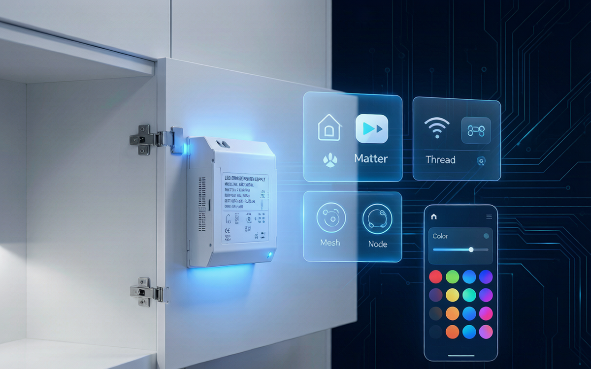

一盏灯能不能同时听懂 Siri、小爱、Google Assistant？过去答案是"看缘分"，2026 年的答案可能是：只要驱动支持 Matter over Thread。
一个新产品，把旧模式"连根拔起"
IKEA 近期曝光的 Dubbelkisel 驱动器，正在智能家居圈里刷屏。它不是灯泡，也不是面板，而是一个藏在橱柜顶部的 LED 驱动电源——和耐利普天天打交道的品类一模一样。
但它的特别之处在于：原生支持 Matter over Thread，无需专有网关，直接接入 Apple HomeKit、Google Home、Amazon Alexa。用户不用换灯、不用换线，只要把旧驱动拆下来换上它，橱柜灯、射灯、灯带立刻变"智能"。
这件事为什么重要？因为它把智能照明的升级点从"灯泡"挪回了"驱动"。对驱动厂商来说，这不是一个遥远的趋势，而是客户下个月就可能问你的问题："你们的驱动能不能接 Matter？"
Matter 和 Thread，到底在解决什么？
很多终端用户被各种协议搞晕过：Philips Hue 要桥接器、米家设备不一定支持 HomeKit、Aqara 和华为又各玩各的。买回去才发现，手机里的 App 比遥控器还多。
Matter 可以理解成智能设备的"通用语言"，由苹果、谷歌、亚马逊、三星等巨头共同制定。它不管设备用什么无线电，只定义设备之间"说什么"——开、关、调亮度、调色温，统一指令。
Thread 则是这套语言最喜欢跑的"邮路"：一种基于 IPv6 的低功耗网状网络。每个通电的 Thread 设备都可以当"路由器"，帮其他设备转发信号，某一台掉线也不会影响整体网络。
把两者合起来，就是：**一个驱动通电入网后，既能被苹果家庭 App 控制，也能被 Google Home 识别，还能当 mesh 节点帮隔壁的传感器传数据。**这对大户型、别墅、商业空间来说，稳定性的提升是实实在在的。

为什么是驱动层，而不是灯泡层？
智能照明经历过两个阶段：
- 1.0 时代：智能灯泡自带 Wi-Fi/Zigbee，用户换灯泡就行。问题是功耗高、成本高、每个灯都是一个独立无线节点。
- 2.0 时代：把无线模块外接到驱动或调光器上，灯具厂家 retrofit 升级。问题是多一层接线、多一份故障点、空间也紧张。
2026 年正在进入 3.0 时代：无线芯片直接集成到 LED 驱动 PCB 上。驱动体积不变，成本大幅下降，灯具厂商一次认证即可，OTA 升级由驱动厂统一维护。
这个变化对 LED 驱动电源厂来说，意味着产品定义要从"电能转换器"升级成"智能照明节点"。你的客户买的不再只是一块恒流源，而是一张进入全屋智能生态的"门票"。

驱动厂商要面对的三个真问题
1. 芯片选型和协议栈
目前 Matter over Thread 的主流方案多基于 Nordic nRF52840、芯科科技 MG24 等 SoC。值得注意的是，芯科 2026 年推出的 SixG301 已经集成了 LED 预驱动器，目标就是智能照明应用。这会把灯具 PCB 设计门槛进一步拉低。
驱动厂要决策的是：自己跑完整 Matter SDK，还是买模组方案？前者灵活、后者快。对中小厂商而言，先做模组方案占坑，再逐步自研，是比较现实的路径。
2. 多协议兼容不是可选项
Matter 不是来消灭 Zigbee 的，而是来和解的。IKEA Dubbelkisel 同时保留 Zigbee 能力，支持旧遥控器和传感器直接配对。国内场景里，DALI-2、0-10V、蓝牙 Mesh 同样大量存在。
所以 2026 年的驱动产品，大概率是 Matter + Thread + Zigbee/DALI 多模共存。这对固件架构、射频隔离、认证测试都提出了更高要求。

3. 安全认证成为出海门槛
欧盟 RED 法规和美国相关安全要求正在收紧。芯科 SixG301 主打 PSA 4 级安全认证，目的之一就是帮设备厂合规。对于计划做跨境 OEM/Amazon 的驱动厂商，Matter 认证 + PSA/UL 认证，会变成和 CE/CCC 一样的基础配置。
给灯具和驱动厂商的三个落地建议
- 先把 Matter 当"翻译器"，不是"革命"：不用推翻现有产品线，而是先出一到两款 Matter-ready 驱动，覆盖最常见的橱柜灯、筒灯、灯带场景，测试市场反应。
- 关注 Thread Router 能力：通电设备如果能当 Thread 路由节点，对客户来说就是网络覆盖的加分项。这是 Matter over Thread 驱动相比纯 Wi-Fi 方案的核心卖点。
- 囤好认证预算和时间：Matter 认证、Thread 认证、各生态平台的兼容性测试，周期比传统 CCC/CE 长。建议提前 6-9 个月启动，避免错过 Q4 的出货窗口。
写在最后
智能照明的竞争，正在从"谁家的灯更亮"转向"谁家的灯能接更多平台"。Matter over Thread 不是营销概念，而是 IKEA、Philips Hue、Nanoleaf、雷特科技们已经在批量落地的技术路线。
对 LED 驱动厂商来说，2026 年的关键问题不是"要不要做 Matter"，而是"什么时候做、以什么成本做、能不能赶上这一波换机潮"。
灯还是那盏灯，但驱动里面，已经装下了一整个智能家居的未来。
耐利普电子科技 —— 专注 LED 驱动电源与智能照明方案。如需 Matter-ready 驱动选型咨询，欢迎联系刘先生：13825496855。